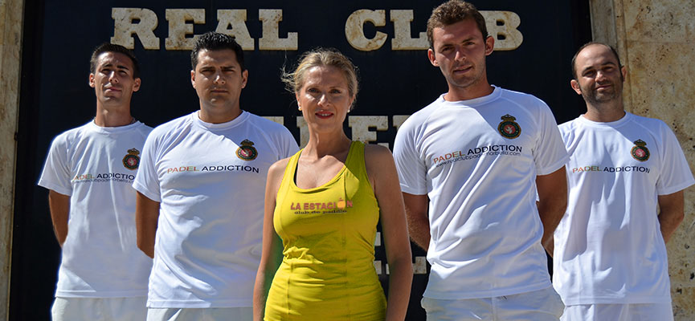

¡Bienvenidos!
La estacion es un club de pádel de Comodoro Rivadavia, ubicado en la loma, una zona de fácil acceso y aparcamiento. Desde un principio, la estacion nace para convertirse en un referente en el mundo del pádel provincial y regional, apostando por una oferta de servicios de calidad. La estacion ofrece en sus pistas profesionales, oficiales del Pádel ProTour, una amplia gama de servicios relacionados con el pádel, desde alquiler de pistas, escuela, clinics, eventos, ranking, etc.
